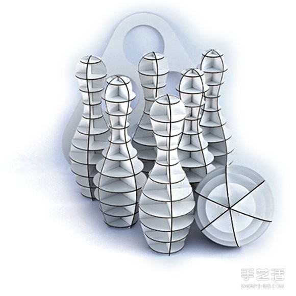
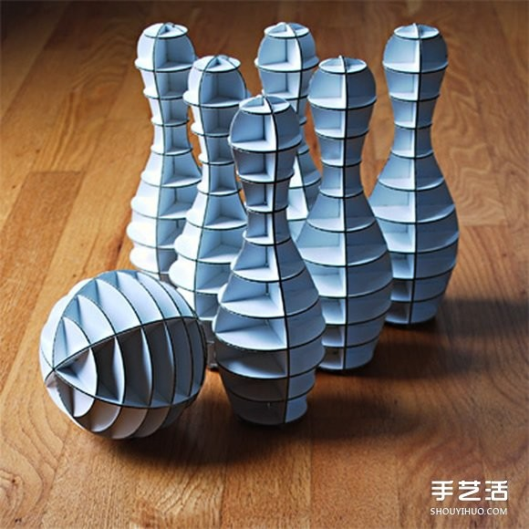
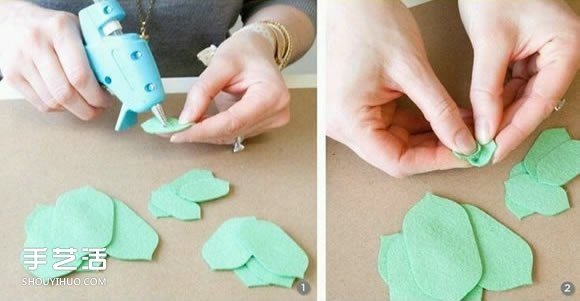
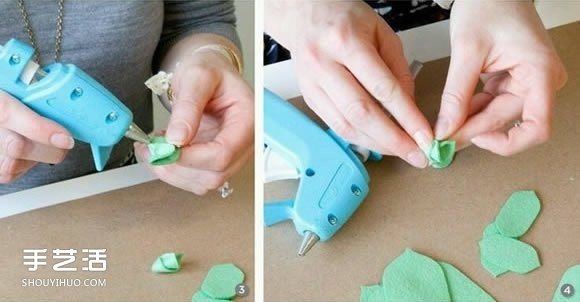
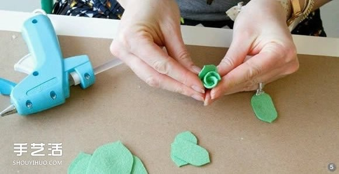
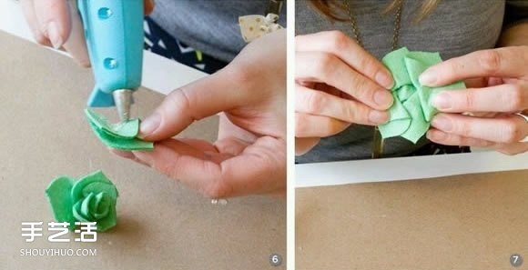
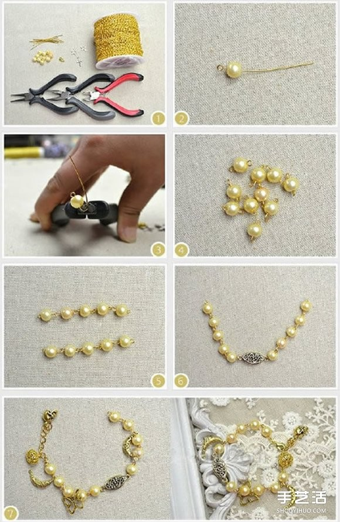

让每一天都有机会成为你人生中最美好的一天
让每一天都有机会成为你人生中最美好的一天手工瓦楞纸保龄球图片 自制环保保龄球的作品
材质：纸箱纸盒 作者：步桐 时间：2016-08-23
室内的保龄球运动，即使是下雨天也不受影响，而下面要分享的这种手工瓦楞纸保龄球， 让你在办公室也可以玩一场尽兴的保龄球!
工作的时候难免会因久坐而骨头酸痛，那就休闲一下，来玩玩这个利用瓦楞纸制作的保龄球组吧~扁平的包装易于藏在书本、抽屉间， 组合完毕之后，就可以拉上同事来场保龄球赛，可说是办公室娱乐之首阿!
一组六只球瓶一颗保龄球售价约美金30元，而身为手工爱好者的我们，当然要自己亲手制作啦，开始转动脑筋吧~


不织布玫瑰花教程 手工布艺玫瑰花的做法图解
材质：布艺花朵 作者：步桐 时间：2016-08-25
玫瑰花长久以来就象征着美丽和爱情，论起受欢迎的程度，恐怕没有哪种花可以跟它相媲美。手工制作不织布玫瑰花的教程图解 ，作品看上去很细腻，不管用来装饰什么都相当不错。
首先是在纸上打印或画出大大小小玫瑰花瓣，剪开后作为模板剪裁不织布。
将剪好的布花瓣卷起，并用热熔胶枪固定。
花瓣从小到大，一片片包裹上去。
美丽的玫瑰花在手中满满绽放。
做好的布艺玫瑰，美丽而又大气，想想怎么搭配它吧~~~
新娘珍珠手链DIY 自制适合新娘佩戴珍珠手链
材质：串珠手链 作者：步桐 时间：2016-09-25
一款漂亮的珍珠手链DIY教程，利用金属丝和色泽偏黄的珍珠制作而成，点缀以一些民族风金属小挂饰。华丽的珍珠手链， 适合婚礼时给新娘佩戴，如果还没有被婚礼准备搞得晕头转向，就来亲手做一个吧~~
先用金色金属丝处理每个珍珠，再连接起来即可，做法并不难，注意下细节应该就能做出让自己满意的作品来。